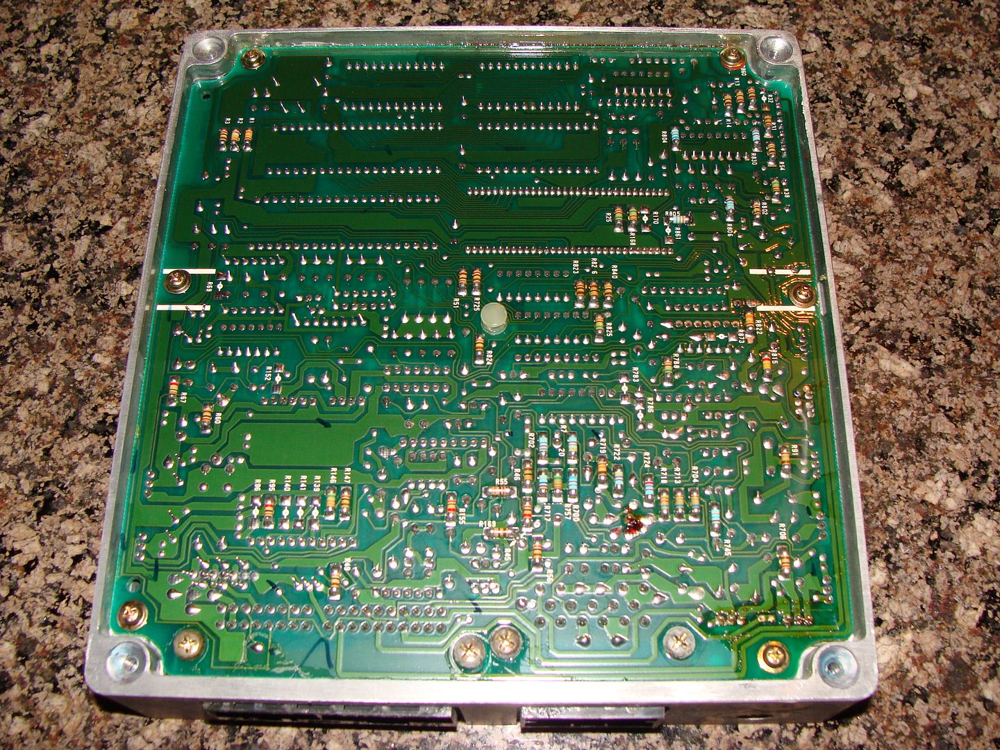
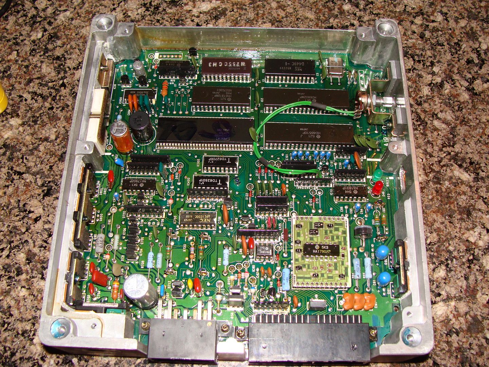
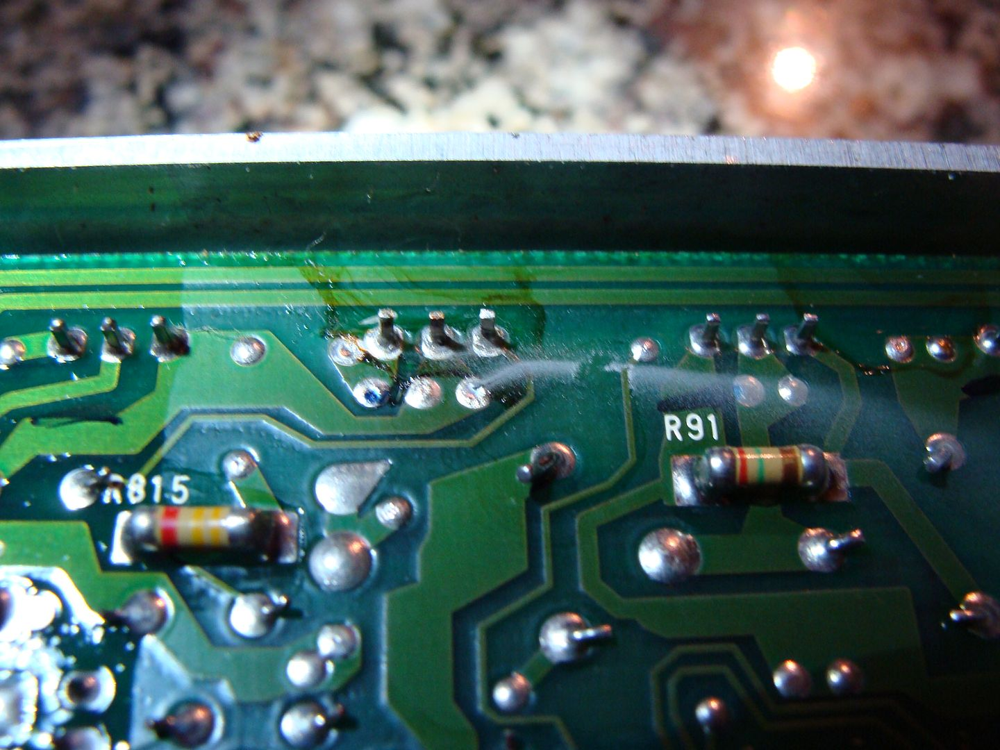
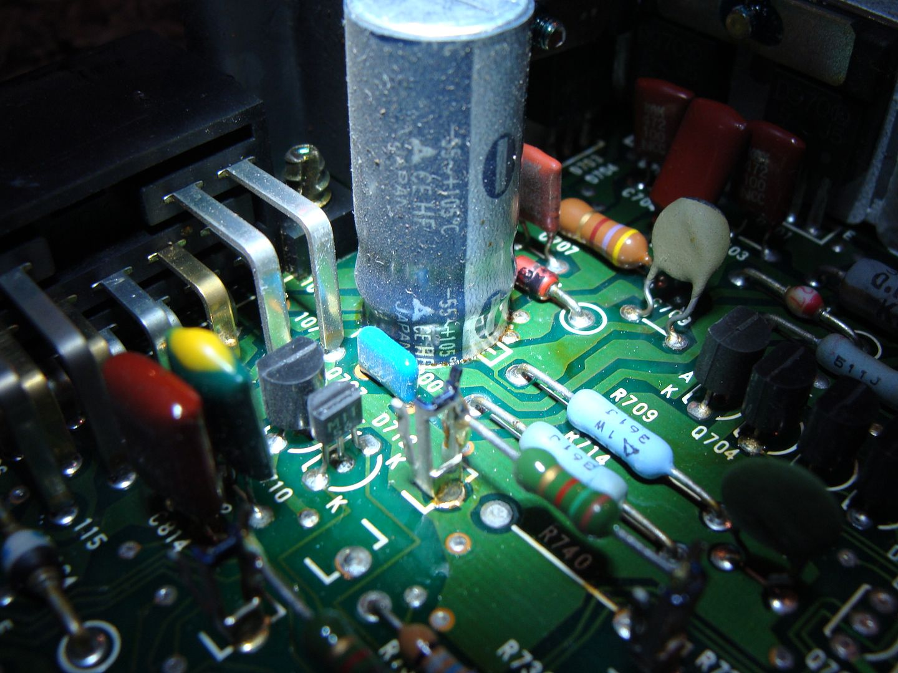
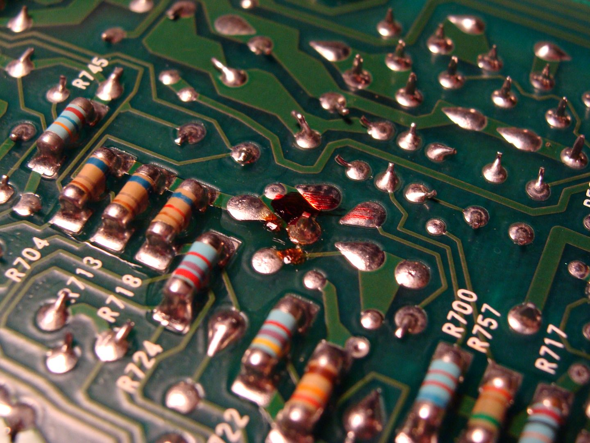
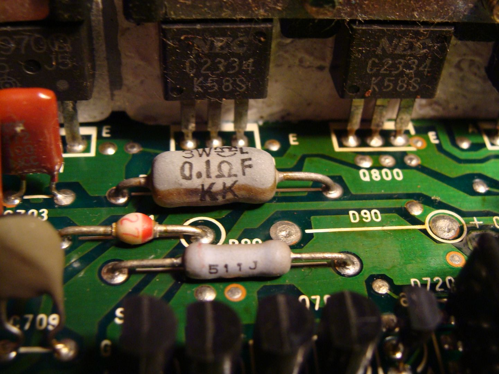

-
What are folks' opinion about reman ECU's sold by Cardone (or others) versus used "working" ECU's sold on eBay? There's quite a premium for the reman… and the eBay goods aren't cheap. Just wondered how many folks here have bought one of either. With a finite supply of ECU's, I assume the reman is going to be the last hope for these cars…'86 NA - original owner (1986-93) and final owner (2005-present)
My build thread: http://z31performance.com/showthread…-Got-mine-back
-
No, the last hope is megasquirt or another standalone system! Personally, I bought two ebay ECUs for $80 each before shipping, which was about a 25 per cent premium over forum prices at the time. When I got them they both looked like shit, covered in water spots and with external corrosion. The 87NA one ran peachy for ~10K miles before I replaced it with the 87T one which died after about 4K miles. -
Why not just buy one from a trusted forum member? Put up a WTB ad. I sold my flawless one for $100. Bought another from a member that was clean too for I think $70.Usual Z31 suspect: Garage Queen (aka broken)

-
Already posted a WTB… no bites so far… thus the question about other options.Originally posted by 300zxturboftw View Post'86 NA - original owner (1986-93) and final owner (2005-present)
My build thread: http://z31performance.com/showthread…-Got-mine-back
-
Ask the members who have a lot of parts. I bet a few of them who don't check the forum regularly in depth, but may check PM's have one sitting around.Usual Z31 suspect: Garage Queen (aka broken)
-
My ECU
Picked up a known working ECU from a member for $65 shipped, so decided to open up the one I suspected might be bad. Here are some pics of the internals… definitely looks like something(s) smoked:
Both sides of the board… no cobwebs:


Some smoke obvious here… I wiped a little bit to see:

The "gold" colored lead coming in middle left of this picture is pin 108, which supplies variable resistance ground to the fuel pump. Its trace goes into that big cylindrical capacitor, and it looks like the board got hot at the base. Not surprising since this is probably one of the higher amperages flowing through the box (?):

This spot of goo looks like it must have gotten hot:

This capacitor looks like it overheated:

Just curious if anyone knows what this stuff does (LOL)… seriously, I'm not an electronics tech, but is it reasonable to try to have someone repair this? Parts all look like basic stuff (capacitors, resistors, transistors, maybe some IC's thrown in for good measure… I doubt anyone is in the business of diagnosing all the failed components, so how would Cardone "reman" this?'86 NA - original owner (1986-93) and final owner (2005-present)
My build thread: http://z31performance.com/showthread…-Got-mine-back

Copyright © 2006–. All rights reserved. Privacy Policy